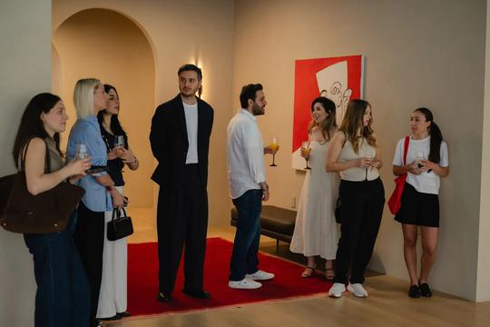
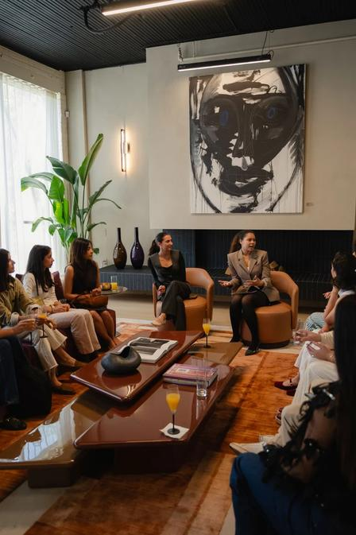
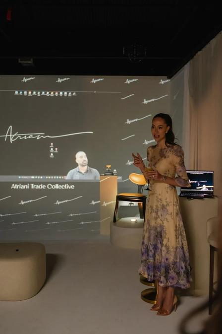
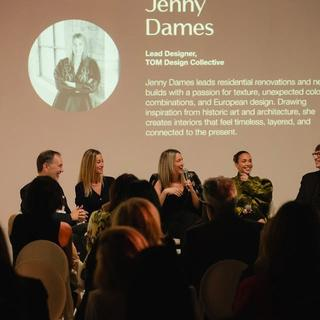
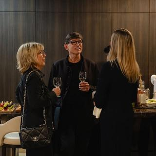
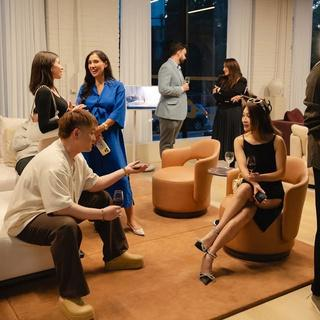

Trade Collective is Atriani Interiors’ B2B engagement initiative designed to build relationships with Toronto’s interior designers, architects, and trade professionals through curated events, targeted outreach, and industry partnerships.
The program included three industry events between May and July 2026, followed by Beyond Standards, an industry panel and networking event in September.
My Role
Supported B2B marketing and event coordination within the marketing and account team, working across trade outreach, creative production, partner communications, and event execution.
Key contributions:
Coordinated targeted invitations, guest communications, and RSVP tracking
Supported industry partner and stakeholder coordination
Managed creative deliverables, timelines, and promotional materials
Coordinated event logistics, vendors, and cross-functional teams
Supported campaign tracking and post-event reporting
Objective
Build relationships with Toronto’s design and architecture community
Increase awareness of Atriani’s trade offering
Drive professional engagement and trade account registrations
Generate qualified leads and consultation opportunities
Execution Highlights
Phase 01: Trade Collective Events | May–July 2026
Supported three industry events focused on building relationships with Toronto’s design community
Coordinated targeted outreach, invitations, registration tracking, and guest follow-ups
Supported event production, creative materials, and partner communications
Helped connect event participation with ongoing trade engagement
Performance & Impact
Trade Collective | May–July 2026
The first three events attracted 32 attendees and generated two consultation requests, supporting the program’s engagement and business development objectives.
50+
Total Registrations
10
New Trade Accounts
6
Qualified Leads



FEATURED ACTIVATION
Beyond Standards
Industry Panel & Networking | September 2026
Building on the initial Trade Collective events, Beyond Standards expanded the initiative through collaboration with four industry partners, helping extend audience reach across Toronto’s architecture and interior design community.
The event combined a panel discussion on bespoke design, creative collaboration, and craftsmanship with professional networking, creating opportunities for industry engagement beyond traditional promotional activities.
Execution Highlights
Coordinated promotional communications and outreach across industry partnerships to broaden audience reach
Supported panelist communications, targeted invitations, and RSVP management
Managed event creative, promotional assets, and production timelines
Supported vendor coordination, event logistics, and guest experience planning
Helped align partners, speakers, and internal teams throughout event preparation
PARTNER COMMUNICATIONS
An invitation partners could share
Designed an event email for industry partners to distribute to their own networks, supporting outreach for Beyond Standards.
The invitation brought together the event’s creative theme, speaker lineup, key details, partner recognition, and a clear RSVP call to action in a ready-to-share format.
The collaboration with four industry partners expanded the program’s reach, helping attract a larger audience of design professionals and creating a stronger platform for industry networking and engagement.
5
Industry Panelists
4
Industry Partners
70
Approx. RSVPs
46
Event Attendees



Key Learnings
Targeted outreach and consistent follow-up are essential for engaging busy industry professionals
Strategic partnerships can expand audience reach and strengthen event participation
Educational content and networking experiences create meaningful B2B engagement opportunities
Integrating campaign communications, partner coordination, and experiential marketing supports long-term relationship development
Trade Collective demonstrated how relationship-driven B2B marketing can evolve from targeted industry events into larger collaborative activations, connecting professional engagement with measurable marketing and business outcomes.